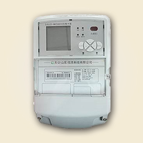

Ⅰ型集中器

Ⅰ型集中器是微功率无线抄表系统主节点，是上行与下行通信的网关。完成主站指令的传送、抄表数据的存储、上传。符合行业、企业相关标准和规范。
特性
支持无线自组网通信。
大容量、高可靠、便施工维护、低时延快速组网。
同地域部署多个集中器，可同时运行，网络容量大。
具有自诊断管理功能，保证集中器的正常运行。
支持本地、远程软件升级，支持断点续传功能。
实时监控电表状态、实时抄录电表指示数据、记录并存储数据，并对电表数据统计、分析。
卓越的电磁兼容性能，能适应电网复杂工作环境。
标准化结构设计，符合电力施工规范要求。
技术参数
额定电压： 3×220V/380V ±30%
工作频率： 50Hz， -6%～+2%
工作电流： 3×1.5（6）A
工作温度： -40℃～+70℃
整机功耗： 集中器消耗的视在功率≤15VA、有功功率≤10W
工作湿度： ≤95%
设计寿命： 10年以上
返回